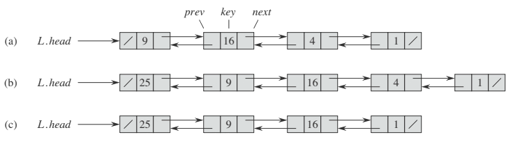
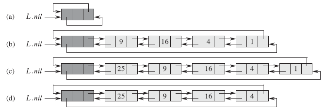
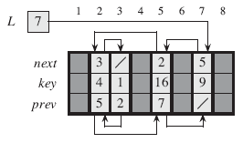
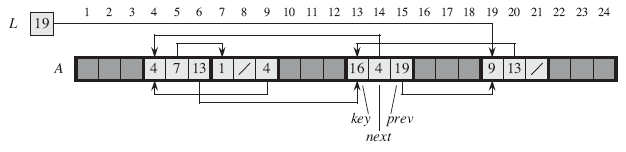
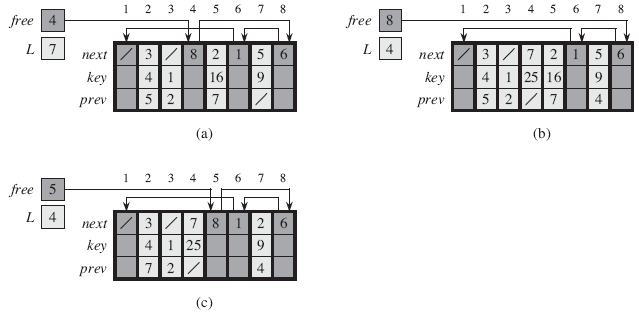
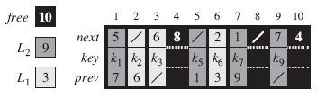
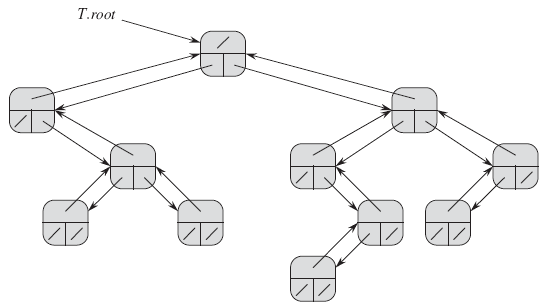
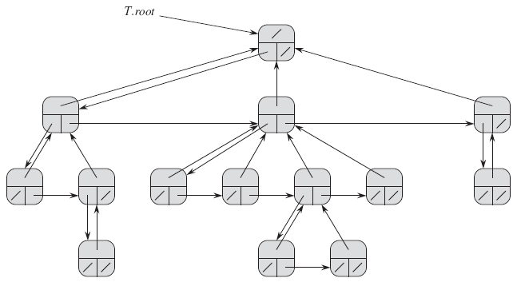

10.1 Stacks and queues
작동 방식
stack : LIFO (Last-In First-Out)
queue : FIFO (First-In First-Out)
모든 연산은 O(1)시간이 걸린다.
Stacks
STACK-EMPTY(S)
if S.top == 0
return TRUE
else return FALSE
PUSH(S,x)
S.top = S.top + 1
S[S.top] = x;
POP(S)
if STACK-EMPTY(S)
error "underflow"
else S.top = S.top - 1
return S[S.top+1];
Queues
ENQUEUE(Q,x)
Q.[Q.tail] = x
if Q.tail == Q.length
Q.tail = 1
else Q.tail = Q.tail + 1
DEQUEUE(Q)
x = Q.[Q.head]
if Q.head == Q.length
Q.head = 1
else Q.head = Q.head + 1
return x
10.2 Linked lists
- 연결리스트(linked list)는 객체(object)들이 일렬로 늘어서 있는 자료 구조이다. 객체는 키와 포인터를 가지고 있다.
- 머리(head)는 리스트의 첫번째 요소이고 전임자(predecessor)를 가지고 있지 않다. 꼬리(tail)는 리스트의 마지막 요소이고 후임자(successor)를 가지고 있지 않다.
- 이중 연결리스트(doubly linked list)는 prev, key, next로 이루어져 있다. prev는 전임자를 next는 후임자를 가리킨다. key는 값을 의미한다.
- 환형 연결리스트는 테일의 다음 객체는 헤드이고 헤드의 이전 객체는 테일이다. 즉 처음과 끝이 서로 연결되어 있다.
가정
- 남은 단원에서 쓰이는 리스트는 정렬 되어 있지 않으며 이중 연결리스트라고 정의한다.

그림 10.3 (a) 동적 집합 {1,4,9,16}을 표현한 이중 연결리스트 L. /는 NIL을 나타낸다. (b) 25값을 가진 객체를 삽입한 연결리스트. 머리는 9값을 가진 객체에서 25값을 가진 객체로 바뀐다. (c) 4값을 가진 객체를 삭제한 연결리스트.
Searching a linked list
LIST-SEARCH(L,k)
x = L.head
while x != NIL and x.key != k
x = x.next
return x
최악인 경우 실행시간: Θ(n)
Inserting into a linked list
LIST-INSERT(L,x)
x.next = L.head
if L.head != NIL
L.head.prev = x
L.head = x
x.prev = NIL
실행시간: O(1)
Deleting from a linked list
LIST-DELETE(L,x)
if x.prev != NIL
x.prev.next = x.next
else L.head = x.next
if x.next != NIL
x.next.prev = x.prev
실행시간: O(1)
Sentinels
감시인(sentinel)
경계 조건(boundary condition)을 단순화시키는 속임수 객체.(그림 10.4)
* sentinel의 사전적 의미는 통로의 한 지점에서 보호하고 있는 군인이다.

그림 10.4 감시인을 가진 환형 이중 연결리스트. 감시인 L.nil은 머리와 꼬리 사이에 나타난다. L.nil.next를 이용해 리스트의 머리에 접근할 수 있기 때문에, L.head 속성은 더 이상 필요하지 않다. (a) 빈 리스트. (b) 그림 10.3(a)를 나타낸 연결리스트. (c) 25값을 가진 객체를 삽입한 연결리스트. (d) 1값을 가진 객체를 삭제한 연결리스트.
LIST-DELETE'(L,x)
x.prev.next = x.next
x.next.prev = x.prev
LIST-SEARCH'(L,k)
x = L.nil.next
while x!= L.nil and x!= k
x = x.next
return x
LIST-INSERT'(L,x)
x.next = L.nil.next
L.nil.next.prev = x
L.nil.next = x
x.prev = L.nil
DELETE'와 INSERT' 실행시간: O(1)
SEARCH' 실행시간 : Θ(n)
- 크기가 작은 리스트가 많이 있을 때, 감시인 때문에 추가적인 공간이 필요하다. 이것은 메모리 낭비로 이어질 수 있다.
10.3 Implementing pointer and objects
A multiple-array representation of objects
* NIL 대신에 정수를 사용한다. (예를 들면, 0 또는 -1).

그림 10.5 배열로 표현된 그림 10.3(a)의 연결리스트. 배열의 세로칸은 객체를 나타낸다. 포인터는 상단에 있는 배열 색인을 나타낸다; 화살표는 해당하는 배열 색인의 위치를 나타낸다. 변수 L은 머리의 색인을 나타낸다.
A single-array representation of objects

그림 10.6 배열 A로 표현된 그림 10.3(a)와 10.5의 연결리스트
1차원 배열 표현법은 다양한 길이의 객체를 유연하게 받아들일 수 있다. 하지만 그러한 이종(heterogeneous) 객체를 관리하는 것은 동종 객체를 관리하는 것보다 훨씬 어렵다.
대부분의 자료 구조는 동종 객체로 구성되기 때문에, 다차원 배열 표현법을 사용하는 것이 좋다.
Allocating and freeing objects
쓰레기 수집가(garbage collector)
사용되지 않는 객체를 찾아 처리하는 프로그램
자유 리스트(free list)
빈 객체를 가지고 있는 리스트
ALLOCATE-OBJECT()
if free == NIL
error "out of space"
else x = free
free = x.next
return x
FREE-OBJECT(x)
x.next = free
free = x

그림 10.7 ALLOCATE-OBJECT와 FREE-OBJECT 함수의 효과. (a) 그림 10.5의 리스트와 자유 리스트. (b) ALLOCATE-OBJECT()를 호출한 결과. (c) LIST-DELETE(L,5)를 호출한 후에, FREE-OBJECT(5)를 호출한 결과.

그림 10.8 두 개의 연결리스트 L1과 L2, 그리고 자유 리스트.
10.4 Representing rooted trees
이진 나무와 왼쪽-자식,오른쪽-형제자매 나무 (binary tree & left-child,right-sibling tree)

그림 10.9 이진 나무 T. 마디 x는 x.p (상단), x.left(좌하단), x.right (우하단) 속성을 가진다. 값 속성은 표현되지 않는다.

그림 10.10 T를 왼쪽-자식, 오른쪽-형제자매 나무로 표현한 것. 마디 x는 x.p (상단), x.left-child (좌하단), x.right-sibling (우하단) 속성을 가진다. 값 속성은 표현되지 않는다.